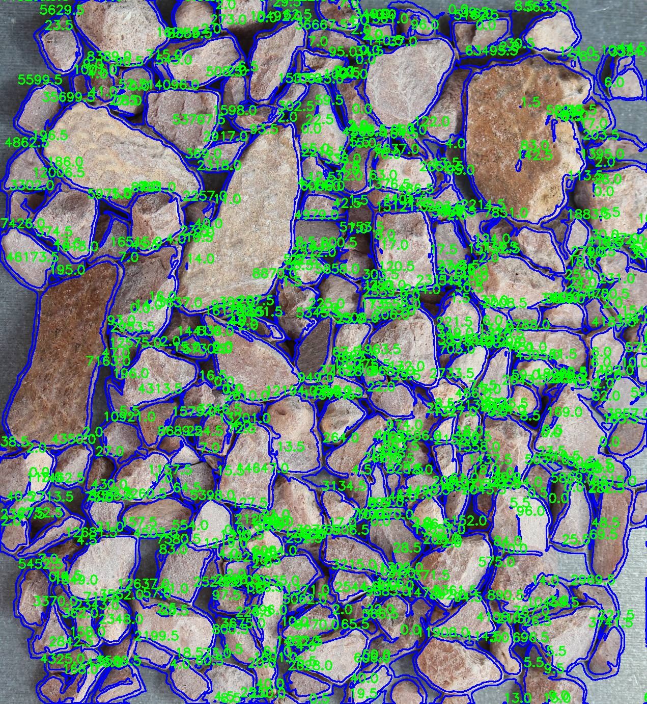
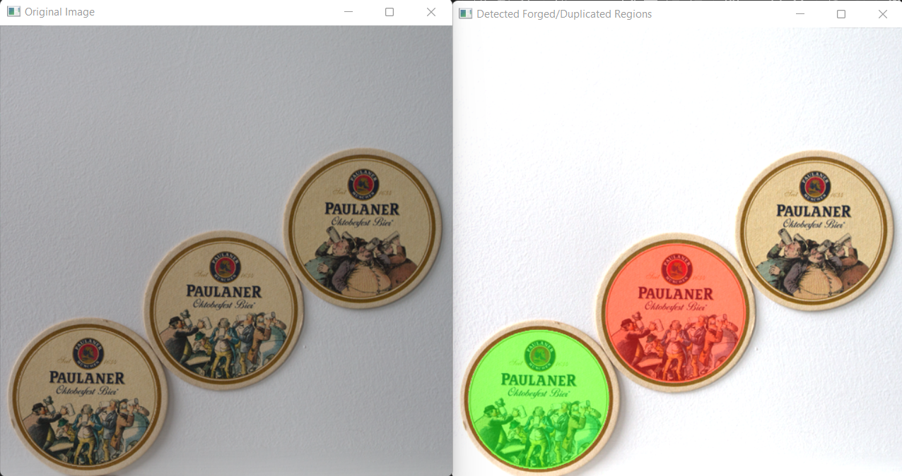

I am currently working as a Computer Vision Engineer - II at Wobot.ai
I completed my Bachelor of Engineering in Computer Science from Government College of Engineering, Nagpur (GCOEN)
When I'm not working, I like to play snooker, read books or listen to music.
Projects

UAV Detection
Real-time Unmanned Aerial Vehicle (UAV) detection system. The objective of the project is to make a real-time embedded drone detection system for a flying vehicle from the infrared data. The model should detect UAV in presence of varying UAV sizes/types, altitudes, distances and lighting conditions.

Smart AI Autonomous Drone (Person Tracking, Intruder Detection)
A smart autonomous drone with Object Tracking and Object Detection capabilities. This project was done in 2 phases:
Person Tracking algorithm with Tello Drone. Find related files here
Making a Custom Autonomous Drone with real-time intruder detection alerts. Find related files here

Framgmentation Analysis using HED
Fragmentation Analysis is a key check used by mining engineers after blasting to determine the efficacy of blast or blast accuracy. It focuses on checking the average size of rocks/fragments generated after blast, This is a image processing / computer vision approach using Holistically Nested Edge Detection Algorithm (HED)
Fume Analysis
Fume Analysis is a key check used by mining engineers while blasting. It focuses on checking specific fumes which are toxic in nature, This is a image processing / computer vision approach to filter and find percentage of these toxic fumes based on colors

Image Forgery Detection Using Benford's Law
This project focuses on detecting a specific form of image forgery known as a copy-move attack, in which a portion of an image is copied and pasted elsewhere.

Chat Application in Flutter with notifications
Customized chat application made with Flutter. Features: OTP Authentication in Flutter; Chat App Data Structure In Firebase Firestore; Pagination In Flutter Using Firebase Cloud Firestore; Upload Image File To Firebase Storage